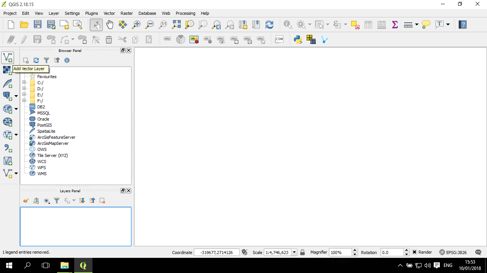
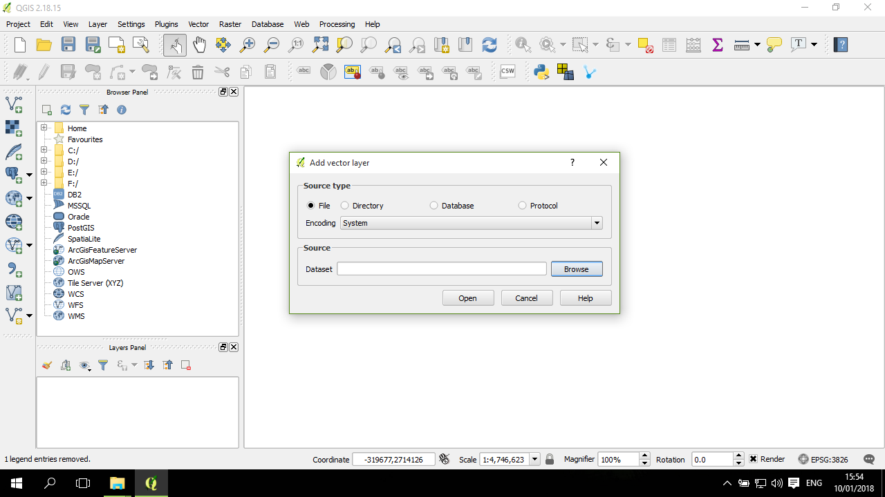
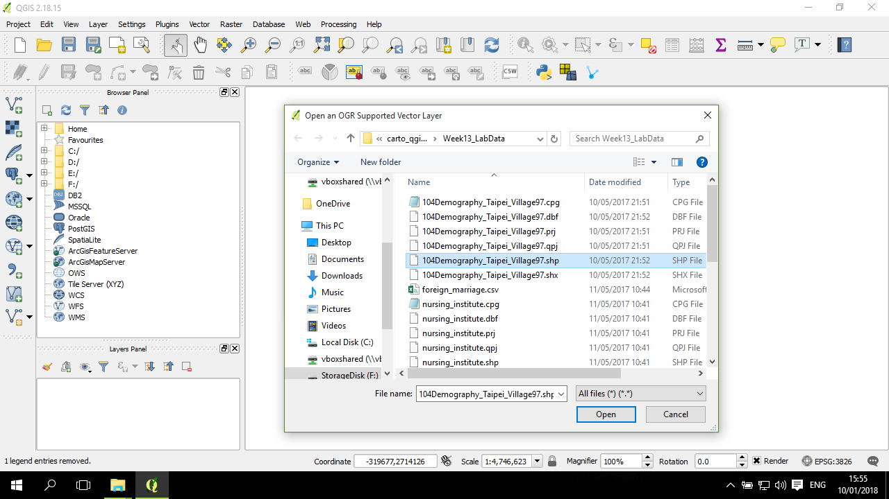
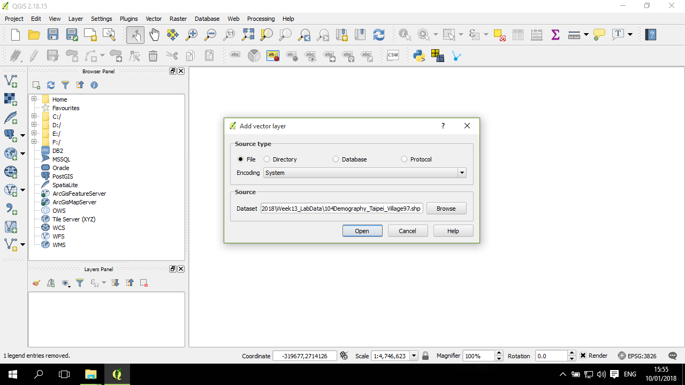
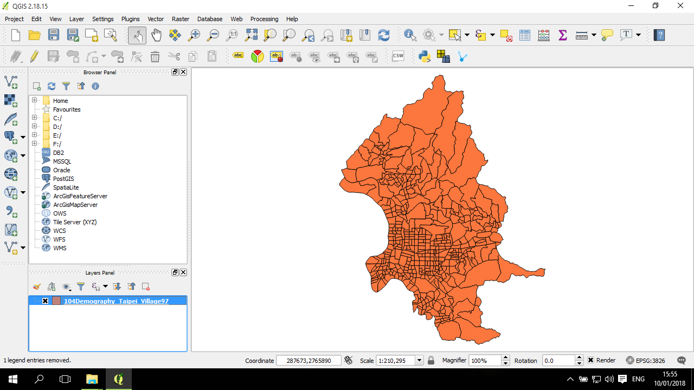
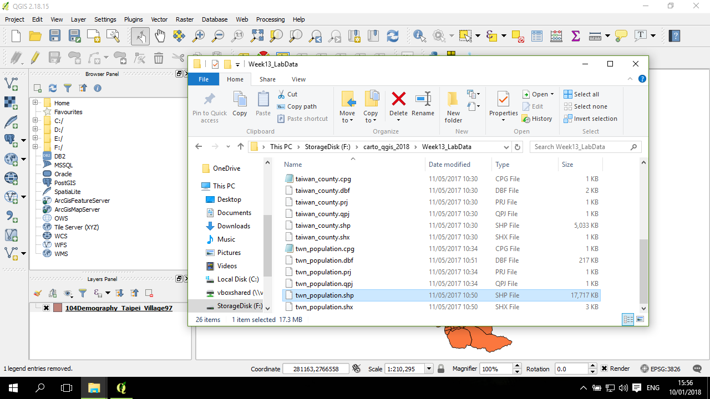
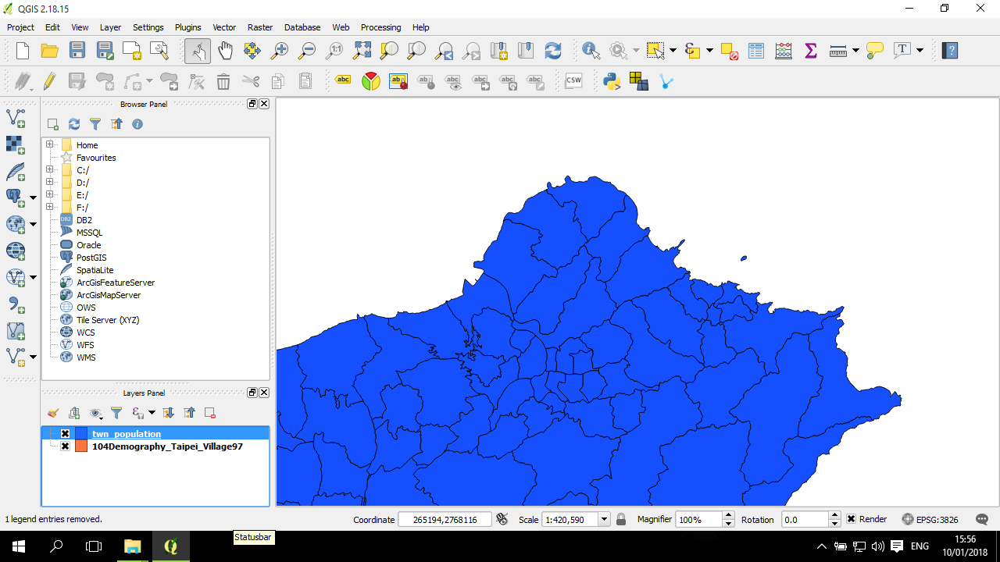
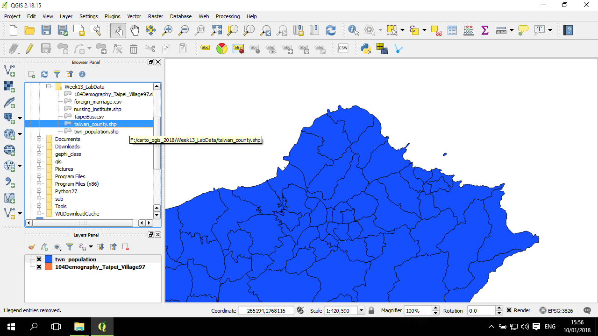
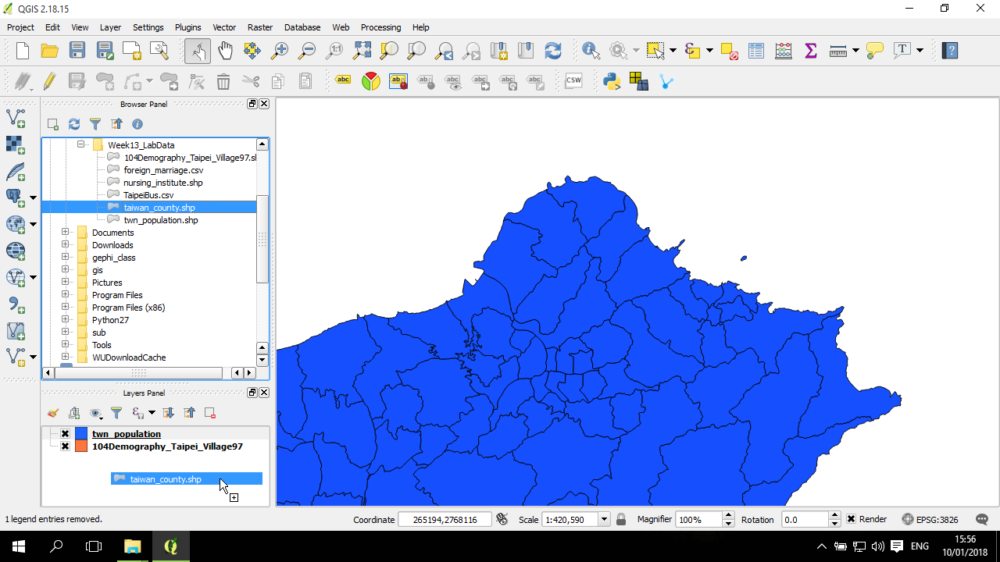

加入向量圖層 (import)
加入(匯入)圖層是所有繪圖、分析、GIS 操作的第一個步驟。QGIS 的加入圖層可以分成各種不同的資料來源，包括：
- vector 向量，包括 shapefile 等各種向量圖層
- raster 點陣圖
- SpatiaLite 資料庫(具有空間拓撲結構的 sqlite)
- postgis 資料庫(postgresql 的空間資料庫)
- WMS/WMTS
- WCS
- WFS
- delimited text，即包括 csv 等用符號 (逗點、空格、tab、| 等) 隔開的結構化表單資料
將檔案匯入到 QGIS 有各種方式，以下分別說明。
方法一：主要的匯入方式
要匯入這些圖層，直接從視窗左方的選項中，點選要加入的圖層的類型(如圖所示是準備匯入 shapefile，選向量Vector 選項)：

接著會跳出一個視窗，如果要匯入的是一般檔案，選來源為 file；然後確認 encoding 是否為檔案的編碼格式，如果這裡選錯了，可以在後續進行修改 (本教學所提供的檔案是 Big5)；然後在下方的Dataset 點其右方的 Browse 瀏覽：

在檔案選取的視窗中，移動到要匯入的檔案所在資料夾，選取要匯入的檔案，以 shapefile 為例，需要選的是 .shp 副檔名的檔案，然後按開啟(Open)：

回到前面的視窗，這時候 Dataset 欄位已有檔案所在的路徑，確認沒問題後，點開啟(Open)：

然後，圖層就被加入了：

如果圖層的座標系統並不存在 (缺 .prj/.qpj 檔案)，QGIS 會跳出一個小視窗提醒說檔案沒有座標系統；或是如果檔案的投影系統與QGIS 當下環境的投影系統相衝突，則軟體也會跳出小視窗來提醒。這時候記得要進行適當的設定，包括對檔案設定投影座標系統，或打開環境座標系統的 OTF (On The Fly)，讓軟體自動投影過去。
方法二：較直觀的方式
通常我們都知道 shapefile 是放在哪個資料夾，所以這時候可以直接將 QGIS 打開好放在背後，然後用 Windows 的檔案管理器找到要匯入的檔案，按著要匯入的 .shp 檔直接拖拽到 QGIS 的已匯入圖層表單(左下角的那塊)：

shapefile 就直接匯入了：

方法三：另一種方式
視窗左方有一塊檔案樹狀圖。從這個地方，找到 shapefile 所在位置：

然後拖拽到其下方的已匯入區塊中，同樣也可以將圖層匯入：
